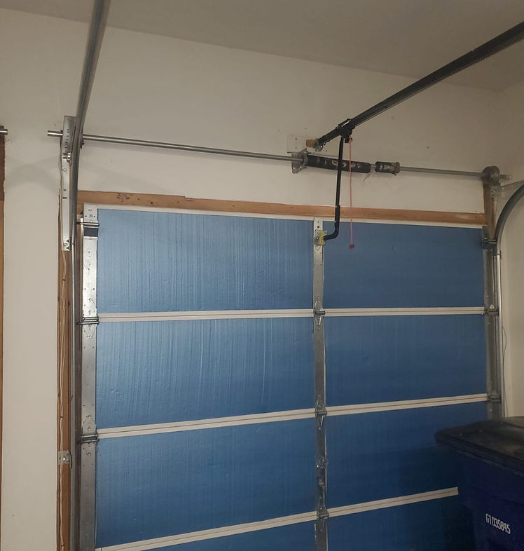
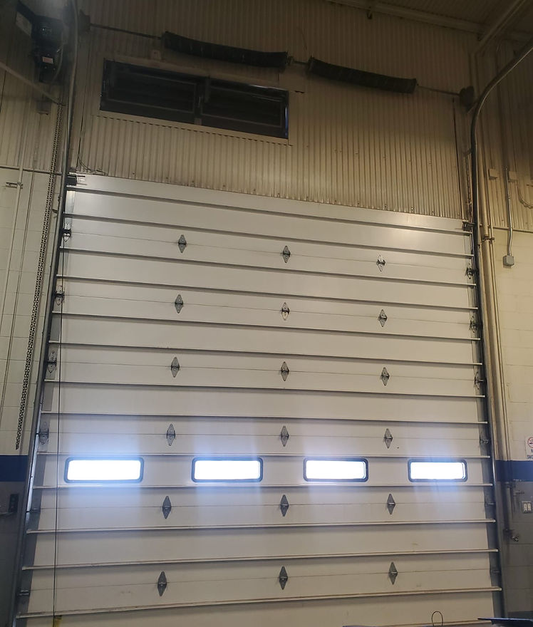
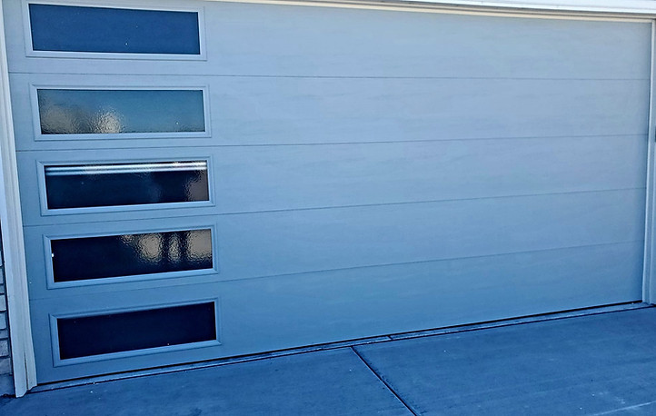
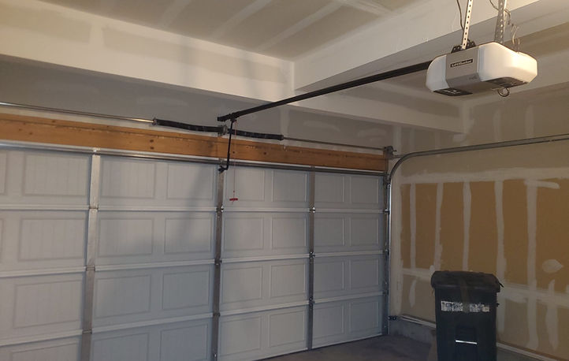
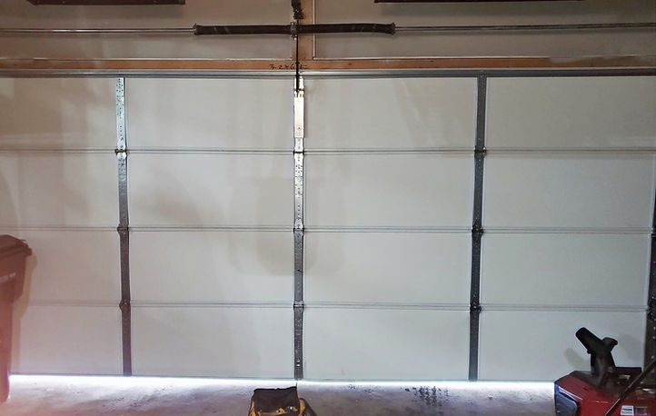
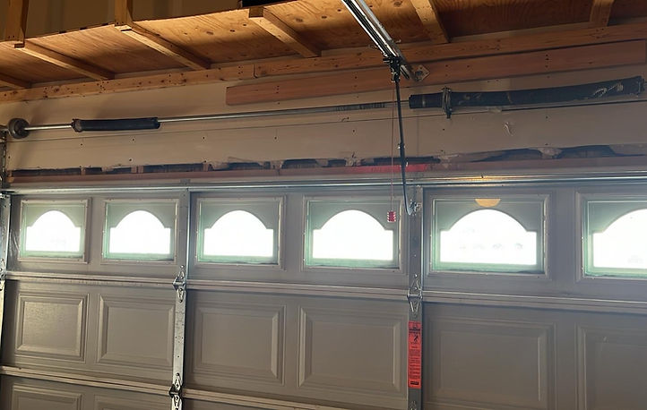

Installation
Garage Door Installation
Thorough inspection, precise measurements, design guidance, and a clean installation process focused on fit, durability, and communication.
See installation detailsSprings Garage Door Services brings together repair, installation, replacement, opener work, maintenance, and spring service under one sharper brand presence. The result is a cleaner, faster, more trustworthy customer experience led by Eyal and built around prompt communication, honest recommendations, and durable work.
Service. Repair. Installation.
Relevant content from the original website has been restructured into a modern conversion-focused template. Each service card points toward stronger SEO targeting, clearer value, and a more authoritative presentation.

Thorough inspection, precise measurements, design guidance, and a clean installation process focused on fit, durability, and communication.
See installation details
Old door assessment, options across styles and price points, honest recommendations, and installation backed by parts and labor warranty language.
See replacement detailsRepairs, replacements, sensors, remotes, wall buttons, keypads, wall-mount systems, and smart opener options controlled by app and phone.
Broken springs, rollers, tracks, panels, hinges, sensors, openers, and hardware issues diagnosed quickly with a practical fix-first approach.
See repair detailsBalance checks, safety review, part inspection, lubrication, and tune-up work that helps prevent avoidable emergency failures.
See maintenance detailsOne of the most urgent calls in this category. The template keeps spring replacement prominent because that is high-intent, high-conversion search demand.
See spring detailsRelationships. Experience. Accountability. The rebuilt site turns those original ideas into a stronger authority story around Eyal and local trust.
The source website already emphasized personalized service, practical expertise, and standing behind the work. This version sharpens that message and gives Eyal a clearer owner presence across the site without bloating the experience or losing conversion intent.
This template intentionally gives the owner a bigger role in the credibility story. Instead of feeling like a generic contractor site, it presents Springs Garage Door Services as an owner-led local operation with a direct point of accountability.
When prospects compare providers, they should see who is responsible, how the work gets done, and why the brand deserves trust. That is what this rebuild emphasizes.
The old Wix site already contained useful job examples. Those project stories are now framed as proof of craftsmanship, range, and problem-solving capacity for both SEO and buyer confidence.

A homeowner wanted better temperature control for a new build. The project highlights custom selection of door design, color, and window configuration.

A failed opener was replaced with a new system including remotes, keypad access, and phone-based app control.

After vehicle impact damage, the crew replaced a severely damaged bottom panel the same day to restore function and curb appeal.

A broken spring repair paired with a full maintenance check helps reinforce the emergency and preventative value of the service lineup.
The original site listed a strong regional footprint. This rebuild preserves it and makes it easier to expand later into deeper city-specific landing pages if needed.
Main local focus with the highest relevance for service intent and branded search.
Homeowner and small commercial demand supported with fast routing.
Higher-value residential service area for installation and replacement demand.
Mountain-area service presence kept visible in the template.
Local route coverage for repairs, tune-ups, and emergency calls.
Good fit for opener work, spring repair, and replacement jobs.
Supports broader regional visibility across eastern service routes.
Target area for premium residential service positioning.
These questions are based on the original service language and common garage door purchase intent. They give the homepage more semantic depth without distracting from the call to action.
Yes. The original site clearly positioned Springs Garage Door Services for both residential and commercial work, and this template keeps that split visible throughout the site.
Yes. The service copy is structured to support honest recommendations after inspection, whether the smarter move is a focused repair or a full replacement.
The original content referenced chain and belt drive systems, wall mount options, keypads, remotes, smart controls, and opener systems with cameras.
The new structure makes the owner more visible, clarifies business identity and coverage, surfaces project proof, uses stronger on-page semantics, and creates cleaner paths to contact.
This rebuild is set up as a premium template for Springs Garage Door Services with the original content foundation, local assets, and a darker modern look that fits the logo colors. The next step is plugging the final contact workflow into production.